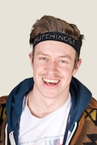
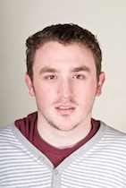
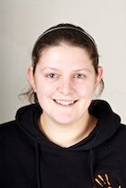

YUSU Elections 2010 » Candidates
Chris Etheridge
- Manifesto
- 60 Second Manifesto
- Hustings
Chris Etheridge intends to run his campaign for Democracy & Services as “a better type of candidate“. He highlights that much of the legislation YUSU is responsible for goes unfulfilled, and, if elected, promises to implement a publicised “traffic lights” system showing the progress of his policies.
{kind=link}
Etheridge is currently Campaigns Officer and says his experience in this role will enable him to ensure swimming pool construction will begin on Heslington East within 18 months.
Emphasising the achievability of his campaign pledges, Etheridge says that he will provide dropboxes for the library in Heslington East and Halifax so as to help them integrate. A further consideration on Heslington East link-ups is to investigate a way of overhauling the method of hiring bikes between the two.
Etheridge also brings up his experience with events. Being the organiser of several society balls, he aims to provide gigs and York Theatre Royal performances for University students. He also wants to improve Viking Raid by offering separate ticket route sales, and a variety of themed food nights in The Courtyard.
David Levene
- Manifesto
Through previous attendance of NUS student conferences, Levene has built up relationships with many key NUS figures, including NUS President Wes Streeting. His work with YUSU has led to an “in-depth knowledge” of how the Student Union operates, meaning Levene knows how and where the NUS can help.
{kind=link}
He believes the knowledge he has of the workings of the NUS, along with these contacts, will ensure the University of York has the national support it needs in the coming year.
Levene’s previous successful campaigns have included the fight to keep Alcuin bar open, as well as the “Yes to NUS” affiliation campaign in his first year. Levene believes his policies represent a plan to improve YUSU’s relationship with NUS, and to ensure the University of York gets the support that it needs.
Sam Asfahani
- Manifesto
- 60 Second Manifesto
- Hustings
Throughout his University career, Sam Asfahani has been involved in University sport and politics.
{kind=link}
He co-founded the University’s American Football Club, and was President of the club for two and a half years, captain for two. He describes his “proudest sporting achievement” as being selected as a coach for Great Britain Youth. Through the position of Langwith College Chair, he also gained experience in chairing meetings and organising projects.
Asfahani is currently Development Officer of the York Sport Committee. He believes this role has helped him understand “the inner workings of YorkSport, and the obstacles caused by the University’s view on sport.”
His main campaign aim is to improve the “current cyclical view of sport at York”, with policies such as “bring back coaching and refereeing clinics on campus, and restart the sports volunteer programme.”
Asfahani has turned down an offer of moving to the USA to coach American Football, to allow him to pursue the position of York Sport President
Elanin Vince
- Manifesto
- 60 Second Manifesto
- Hustings
Elanin Vince, one of YUSU’s current part-time LGBT Officers, will focus her campaign on representation. If elected as Academic Affairs Officer, Vince wishes to take solid results from the University and “strengthen our mandate in calling for changes in University policy, structure and process.”
{kind=link}
Vince wants to accelerate the rate of feedback and its utility; improve assessment methods; and strengthen the current supervisory system, including its accommodation of a variety of learning methods. She also wishes to focus on giving Course Representatives a strong voice and training to “win the arguments at a departmental level”.
Vince also emphasises that her experience as a YUSU officer, with a professional administrative background, will help in representing students to academic Boards and “senior committees in the University”. She has stated her recognition in the growth of Academic Affairs, and the need for change “at the most basic levels” to achieve academic success.
Sam Daniels
- Manifesto
- 60 Second Manifesto
- Hustings
Sam Daniels has strong YUSU experience, primarily gained in the role of YUSU Entertainments Officer last year.
{kind=link}
His manifesto promises include making use of the television screens around campus, and aiming to increase publicity of UGM votes on them. He also believes that UGMs should be rebranded as “the Big Vote” in order to increase democratic involvement, as well as making more minutes for meetings available.
Daniels has suggested using Central Hall as a venue for acts and larger entertainment events, as well as promising an Access All Areas 2. With an agreement already in place to work with the University on an expanded bike rental scheme, he has also proposed the building of new YUSU facilities on Heslington East with a YourShop, and a new student venue. Another key policy is the setting up of a YUSU Loyalty Card to span across all YUSU ventures, with the rewards going to sports and societies.
Daniels has said that he also plans to make current Democracy and Services Officer, Lewis Bretts’, unfulfilled policy to introduce temporary cash points during Freshers’ Week happen next year.
Chris Young
- Manifesto
- 60 Second Manifesto
Chris Young has much experience with student media across York, having been strongly involved in YUM societies.
{kind=link}
Young’s campaign policies focus on balancing media freedom with YUSU moderation. He also emphasises the importance of impartiality in the role of YUM Chair, promising to act as a neutral arbitrator, equally and effectively dealing with all issues that may arise in any of the media societies.
His experience as Halifax Ents officer will also be beneficial in having the skills to organise the YUMAs. Other policies in his manifesto include a serious review and amendment of the media charter.
Peter Saul & Mark Pickard
- Manifesto
- Hustings
Despite being biologically classed as men, Peter Saul and Mark Pickard both define themselves as female.
{kind=link}
They aspire to end ‘size-ism’ and campaign to have the size of the female figure expanded on all campus toilet doors. Saul and Pickard also hope to alter the language used in official documentation, so that all ‘males’ are referred to as ‘unwomen’ in order to reverse the gender stereotype that defines females as ‘wo-MEN’.
They wish to create student committees to readdress the gender imbalance, such as a Gender Diversity Committee, Single Women’s Committee, Double Women’s Committee, Female Daytime Issues committee and Nightime Issues Committee.
David Levene
- Manifesto
- 60 Second Manifesto
- Hustings
David Levene has had considerable experience working within YUSU, as he currently holds the position of Chair of Union Council. He has been involved in a number of campus campaigns such fighting for ethical investment and banking, and keeping the Alcuin College bar open.
His main campaign focus is on communication and participation, with policies such as working more closely and effectively with student media and promising his attendance at one college committee meeting each term at least.
He also proposes to organise strong and effective campaigns against further portering reductions, rising rent banding prices and the University’s refusal to take a stand against the increase in tuition fees.
Closer co-ordination between YUSU and the Colleges is another of Levene’s key policies; he hopes that he can work to help them to protect college bars and ensure further integration between the main campus and Heslington East.
Peter Warner-Medley
- Manifesto
- 60 Second Manifesto
- Hustings
Peter Welfare-Medley’s campaign aims to ” focus on communication, support and tackling real students’ real problems.” With experience as former Welfare Rep for Langwith and current LGBT Officer, he promises to offer strategies to utilise the welfare system to its maximum potential.
{kind=link}
Warner-Medley believes communication of the support available at York needs to be “in people’s faces”. He suggests providing each kitchen with a wall planner of basic welfare services and engaging in early discussion with groups to improve communication.
A key concern of his campaign is the support of volunteers within the welfare system. He promises better equipped and supported welfare volunteers who are more able to communicate with the demographic they represent, “tackling the issues that matter to them”.
Warner-Medley’s campaign puts emphasis on not just giving the right advice, but also giving support to “those who haven’t followed it”, such as providing workshops to protect students against “dodgy landlords”.
Ben Humphrys
- Manifesto
- 60 Second Manifesto
- Hustings
Ben Humphrys, YUSU’s incumbent Welfare Sabbatical Officer, wishes to focus on the academic needs of our current student population, and the fulfilment of his manifesto by not letting the University ignore those needs. He states a “vision for academic representation”, by finding and taking action “on your views”, a method he has previously implemented in “achieving ambitious manifestos”.
{kind=link}
Humphrys wishes to work closely with students to: maintain reasonable tuition fees; train and support Representatives; and provide consistency in academic procedures.
During his year as a Sabbatical Officer, Humphrys has represented the Union to the highest University bodies, and is the only candidate to have had experience in representing students at academic appeals.
Humphrys has stated he would value the opportunity to continue representing our student population by “moving the emphasis over to academia”.
Luke David Sandford & Suzy Dodd
- Manifesto
- 60 Second Manifesto
- Hustings
Luke Sandford and Suzy Dodd have always been deeply involved in student politics; Dodd has a strong experience as Charities and Communities officer for Langwith JCRC last year, and is currently Langwith JCRC Campaigns officer. Luke is Ordinary member for Campaigns Committee and also holds a variety of roles such as Speakers Rep for the Club of PEP. They are running as a pair because “we know we work well together, and we both bring a different perspective to the issues.”
{kind=link}
{kind=link}
If they are elected , the pair have promised to “support the Academic Affairs Officer and the Course Rep network in minimising the negative effects [of HE funding cuts] on students.” They have also pledged to “support the provision of services on the Heslington East Campus – such as more society space.”
The pair promise to use their “passion and experience to bring a new and more exciting dynamic to Campaigns at YUSU.”
Janey Stephenson & Charlotte Phillips
- Manifesto
- 60 Second Manifesto
- Hustings
 Janey Stephenson and Charlotte Phillips are the only female candidates running for the role of Women’s Officer.
Janey Stephenson and Charlotte Phillips are the only female candidates running for the role of Women’s Officer.
{kind=link}
They both profess to be dedicated and passionate about female liberation and breaking down gender stereotypes. They have both been strongly involved in Women’s Committee since their respective Freshers’ Weeks.
They plan to promote an accessible, approachable committee atmosphere, embracing a wide diversity in members and raise awareness of the welfare services that Women’s Committee provides. Their campaign will endeavour to recognise the stigma that ‘feminism’ carries, with an aim to diminish this.
Stephen Kenney
- Manifesto
Stephen Kenney has been the Social Secretary of 21+ Committee for the past year and wishes to continue the work that the Committee has achieved this year.
{kind=link}
He would like to set up a website to build a supportive community for on and off campus students, and open up new positions on the committee, for example an ‘over 35′ rep and sporting rep, since ‘over 21′ is a broad range.
Finally, he hopes to encourage more mature students to pick York as their university.
Andrew McIlwraith
- Manifesto
A Social Policy and Social Work undergraduate, McIlwraith is passionate about seeing welfare issues raised in areas which have he argues have been previously been neglected.
His membership with the hockey club during the past 3 years has sensitised McIlwraith to the need for more welfare involvement in sports clubs, “to bring a turn-around of identities”. In his manifesto, he pledges to “take welfare to students” by being available as a welfare prescence at Ziggy’s, as well as holding weekly welfare drop-ins in discrete places around campus.
With his slogan ‘Don’t be Wak, Vote for Mak’, McIlwraith’s focus is to “give the customer what they want”.
Mandi Modavo & Winnie Amoaku
- Manifesto
- 60 Second Manifesto
- Hustings
Mandi Modavo and Winnie Amoaku have placed a strong emphasis in their manifesto on encouraging ethnically and nationally diverse participation in committee affairs and events.
{kind=link}
{kind=link}
They propose the establishment of public lectures, meet and greets and regular committee meetings to promote the development of an environment that fosters discussion and debate over racial issues.
Modavo and Amoaku have also addressed the issue of accountability, stressing that they believe in full transparency in all actions that they would take once elected in order to maintain the confidence of students.
David Clarke
- Manifesto
- 60 Second Manifesto
- Hustings
David Clarke has held the position of Environment and Ethical Officer for the past year, and is seeking re-election.
{kind=link}
His main achievements in the role have included successfully lobbying the University to sign up to the 10:10 agreement to cut their emissions, and persuading YUSU to move its funds to a more ethical bank.
If elected, he proposes a bike auction every term, and promises to work with environment reps for more effective environment and ethical events at college, as well as University, level. Clarke also promises that with more focus on cutting carbon emissions in the long term, YUSU can become an award winning, ethically and environmentally friendly, Union.
Oliver Hutchings
- Manifesto
- 60 Second Manifesto
- Hustings
Ollie Hutchings held the position of Alcuin College Chair last year.
{kind=link}
His campaign proposes an overhaul of the Union’s setup and its role across campus, reorganising the elections process to be more inclusive and bringing democracy of the Union under the President’s remit.
He also promises to refocus the efforts of YUSU more towards student activities, making it easier for societies to communicate with the student body through petitioning for more student advertising spaces on campus.
Hutchings has placed emphasis on strengthening the Union’s green and ethical commitments, as well as improving the status and support of colleges from within YUSU.
Nick Scarlett
- Manifesto
- 60 Second Manifesto
- Hustings
Nick Scarlett aims to ensure that student activities continue to thrive by building on and improving already existing programmes, and also by adding a few more.
{kind=link}
Scarlett has a range of experience in York student societies, especially after taking on the role of RAG Charities Liaison Officer and helping to organise RAG week, as well as being a Kids’ Club Co-Coordinator and YUSU Volunteering Secretary.
Scarlett’s policies include safeguarding the popular Kids’ Club scheme and hopefully re-introducing the SWAP initiative, which had students working alongside prisoners. He also promises to establish an annual summer opportunities fair, where companies offering summer experience such as voluntary work or internships can come to York. Scarlett wants to continue RAG’s success by establishing college RAG Raids in the autumn term to help create a stronger college base for RAG, as well as garnering more support for RAG week. In order to help the students running societies on campus, he hopes to put all society administration online.
Dan Walker
- Manifesto
- 60 Second Manifesto
- Hustings
Dan Walker is former Goodricke Chair, and was in charge during the successful move to Heslington East. His experience of organising Freshers’ Week has provided him with a wealth of experience in organising entertainment, and his key policies include developing music acts on campus, and cutting the red tape around colleges organising their own events.
{kind=link}
There is an overall emphasis in Walker’s campaign that YUSU must listen to students and open up more for discussion. He is also focussing on improving the experience of new students at York, especially with regards to improving Freshers’ Ball.
Walker promises to take greater advantage of The Courtyard and plans to use its mobile service units to provide events for Heslington East, or any college that does not have the bar facilities to put on an event of their own. Walker ultimately aims to have a Heslington East dedicated social venue set up by the time that Langwith College moves on the site, as well as working with interested banks to install cash machines.
Roberto Powell
- Manifesto
- 60 Second Manifesto
- Hustings
Rob Powell has previous leadership experience, having held the position Chair of Halifax College last year.
{kind=link}
He is leading his campaign on the argument that YUSU has not done enough to defend the interests of both colleges and societies across campus, and that he will radically change this as President.
His election promises include taking more action against portering cuts and issues with Heslington East, as well as simplifying the YUSU website and ensuring Officers are more accessible and available to talk to students directly.
The main focus of his campaign is on the importance of colleges within the University; he promises to fight on their behalf to keep campus bars open, to support their events and to centre freshers’ week more around colleges.
In addition, he will transform JCRC training to meet these needs and increase efficiency.
Matthew Freckleton
- Manifesto
- 60 Second Manifesto
- Hustings
Matthew Freckleton is a third year Sociology student with experience in the student entrepreneurial sector of the University.
{kind=link}
He has held the positions of both Events Director and Digital Communications Director of the York Entrepreneurs Society. He is also currently Ambassador for Enterprise for the University of York.
His manifesto contains a variety of policies, with a strong focus on student involvement and representation at all levels of University decision making.
He proposes the setting up of a new e-petition or forum on the YUSU website to improve student involvement and communication.
Freckleton also promises to introduce lighting to footpaths around Halifax and Alcuin to increase student access and safety, and to lobby the University to ensure the proposed pool and health centre at Heslington East will be completed in 18 months.
Verity Hill & Robyn Heather
- Manifesto
- 60 Second Manifesto
- Hustings
 Both Verity Hill and Robyn Heather have a range of experience in campaigning for environmental issues.
Both Verity Hill and Robyn Heather have a range of experience in campaigning for environmental issues.
{kind=link}
Verity Hill is currently treasurer for People and Planet on campus, whilst Robyn Heather is the ex-People and Planet Chair. Heather has also been Social Secretary and Press and Publicity Officer of People and Planet. Hill was 10:10 Campaigns Co-ordinator for People and Planet.
Their manifesto promises to focus on lobbying the University to improve its recycling as well as helping it achieve its 10:10 goal by identifying areas where energy is being wasted, so that real and effective change can be made.
Other policies include making it easier for people to get second hand clothes, by running more clothes swaps and fashion shows, and to get a wider range of Fairtrade good across campus and in vending machines.
They hope to generally raise awareness through more environment and ethical focused events.
Rob Newton
- Manifesto
- 60 Second Manifesto
- Hustings
Rob Newton, current President of the Male Hockey Club, wants to help sport at York, “Play More, Win More and Be More.” If elected, he hopes to “improve perceptions of college sport” and increase the availability of “non-competitive exercise for students.”
{kind=link}
Newton aims to improve the perceived image of YorkSport via various positive development policies. He is committed to making sports clubs more professional, with regard to the provision of coaching, equipment and facilities.
One of Newton’s key aims is to develop participation in disability sport at the University. He also plans to develop an incentive-driven ‘York Sport Clubmark Award’. Through stringent budgeting and realistic short term change, Newton believes that increased funding can be found in the long term.
Helen Houghton & Philip Morris
- Manifesto
- 60 Second Manifesto
- Hustings
If they are elected, Helen Houghton and Phillip Morris hope to promote the idea that “a person’s identity and sexuality is not just something to defend, it is something to celebrate and be proud of.”
{kind=link}
{kind=link}
They aim to accomplish this through “educational workshops [and] feel-good sessions.” Through the development of an LGBT-specific security campaign, the pair wants to ensure that no-one feels threatened about expressing their sexuality or gender identities.
Houghton and Morris also hope to “put the T back in LGBT”, by encouraging an understanding of what it means to be Trans, through setting up a wide range of awareness events. Their campaign is keen to promote the idea that “LGBT is not open solely to Lesbian, Gay, Bisexual and Trans members”, something they aim to achieve by working within the LGBT community to “reduce heterosexism”.
David Hansen
- Manifesto
- 60 Second Manifesto
- Hustings
David Hansen’s campaign proposes “fair rules, fair chances and a fair say for everyone.” His policies are wide-ranging, and focus on embracing the variety and diversity that exists within the University of York.
{kind=link}
He is committed to fostering an environment where all societies and sports can flourish and are open and inclusive for everyone. Hansen also makes promises to “introduce progressive initiatives which embrace the improvement of student directives” and “reform the structure to create a new world of happiness for everyone.”
While he has no previous YUSU experience working, he has emphasised the commitment and political drive he will bring to the role of President.
Tim Ngwena
- Manifesto
- 60 Second Manifesto
- Hustings
Tim Ngwena has held the post of YUSU President for the past year and was also Fusion President the year before.
{kind=link}
In his campaign for re-election, Ngwena’s main objective is to re-focus strategic efforts of the Union on effective campaigns, sustainable growth and continuous development of the University and the Union.
His key manifesto promises include the introduction of a Union reward card to directly reward students, colleges and societies, as well as increasing and streamlining support for colleges to ensure that individual needs are addressed.
He has also proposed ideas that will reform the role of President, including the establishment of a weekly and termly impact and activity report on the actions and efficiency of the Union.
International students are also a focus, with his proposal for a YUSU International Students arrival week and event, which will maintain continued collaboration throughout the year.
Jason Rose
- Manifesto
- 60 Second Manifesto
- Hustings
Jason Rose, the current Campaigns Officer, claims that he is the right candidate because of his experience on various academic committees at the University during his time as a student. Rose has sat on University Senate for three years and sees that he is “the only candidate with relevant experience”.
{kind=link}
Rose’s policies are concerned with: Higher Education Funding; the renovations to the JBM library; students with learning disabilities; and a shift in focus to current students. The third year Physics student has stated that he has “read every report ever published on modularisation, I think that it’s a good system.”
Rose has faith in his own competency for the role of Academic Officer: “I’d urge people… to vote for the person who they think will be best at representing students and fighting for their causes.”
Kathryn Unsworth
- Manifesto
- 60 Second Manifesto
- Hustings
Katy Unsworth believes that university is not merely an academic experience, and wants to ensure that the role of Student Activities Officer focuses on what YUSU can do for students.
{kind=link}
Her policies centre on promoting student involvement in campus activities, and wants to encourage students to embrace all the opportunities available to them at York. Unsworth also promises to ensure that all events are well and equally publicised for both larger and smaller societies on campus.
If elected, she hopes to achieve a closer working relationship between all the strands of student activities, as she believes closer interaction between the different societies and the students will increase participation. Unsworth’s campaign particularly emphasises the encouragement of RAG and YUSU Volunteering, with plans to make RAG week bigger and better. She believes that greater co-operation will achieve more than ever before.
Anthony Richards & Stephen O’Ryan
- Manifesto
- 60 Second Manifesto
Both Anthony Richards and Stephen O’Ryan have both had much experience in organising events across campus.
O’Ryan has experience as Halifax Ents Officer, whilst Richards is Ents assistant. Richards is also Press and Publicity Officer for Debating Soc.
In their campaign they have promised to improve and support college events with the creation and distribution of Ents guidelines to help events run smoother. They also promise to ensure that different college events do not run on the same day.
They propose to offer more support for off-campus events, with better liaison between venues and more organised nights out to major cities. O’Ryan and Richards’ manifesto also promises more regular and varied events at The Courtyard, making more use of such a popular student space, and a greater focus on international events.
Tom Martin & Nell Beecham
- Manifesto
- 60 Second Manifesto
- Hustings
Both candidates Nell Beecham and Tom Martin have extensive experience with LGBT issues in the University. Martin is Goodricke college’s LGBT representative, and both hold positions in the LGBT social committee.
{kind=link}
{kind=link}
The primary goal of their campaign is “increasing the awareness of LGBT issues” and both are strong advocates of “welfare through education”. Their policies will focus on “blood donation, the sex education bill and trans awareness day.”
The pair hope to “branch-out”, and integrate LGBT with other campus societies. They hope to offer a view on LGBT issues that is “both passionate and united.”
Martin and Beecham emphasised the “thirst within our community for events that offer information and opinions on issues that affect us. These events bring the members of our community together. Through education, we believe that better welfare will be achieved for all.”
Rachel Hesselwood
- Manifesto
- 60 Second Manifesto
- Hustings
Rachel Hesselwood aims to expand on existing student activities across campus by improving publicity and awareness, and student participation and sustainability of all societies and organisations.
{kind=link}
She hopes to raise awareness by establishing a new society stalls area, and by publicising an ‘activity a day’ campaign across campus. Hesselwood plans to expand and encourage already existing societies by establishing sponsorship training, and also by creating a ‘society start up fund’ for new societies.
Other campaign policies include gaining student use of the Heslington East nature reserve, and the creation of a monthly feature in the York Press which showcases student talent. She also wants to ensure the continued success of RAG and YUSU volunteering, and plans to produce an ‘UltraVires Survival Guide’ to keep students updated on charity law.
Hesselwood has considerable experience with student activities in the University; she has been YUSU Volunteering Officer for two consecutive years, has leadership and organisational experience with Girlguiding UK, and has been involved in RAG events, Kids’ Camp and KEEN.
Matt Bailey
- Manifesto
- 60 Second Manifesto
- Hustings
Matt Bailey is a third year student whose experience includes three years as Course Representative; contributions to academically centred events; and chairing the Chemistry Academic Society, ChemSoc. He has stated that he is “the clear choice…as I genuinely believe I can make a positive difference to student life in York.”
{kind=link}
Bailey is concerned with the impact of departmental budget cuts on the quality of academic degree standards. If elected, he wants to ensure “clarity, transparency and communication” in the academic field, and has based his campaign points on the achievement of this end goal.
Bailey also wishes to improve student employment prospects and clarify the accessibility of various academic resources – such as reading lists and online information about study resources – to both current and prospective students. Bailey proposes to provide this in the written diary form of an Academic Handbook, and has also suggested the implementation of a ‘You Said, We Did’ facility to demonstrate how student feedback is acted upon.
Luke Malkin
- Manifesto
- 60 Second Manifesto
- Hustings
Luke Malkin is centering his campaign around his ‘Lucky 7′ policies which aim to put student societies at the forefront of YUSU issues.
{kind=link}
He has much experience with organisation and responsibility; he organised York Come Dancing this year as Dancesport President, and has experience with RAG as Ents Rep.
His policies include increasing and improving societies’ storage space, and also gaining more space for societies to use; if elected he hopes to open the Dixon Studio in Wentworth for society use.
Malkin is keen to promote student awareness of events and activities, and wants to rebrand student activity advertising on campus using the mascot, Lucky the Duck, to increase student knowledge of activities and events. He also has plans to help students running various societies on campus by launching a YUSU guide to running societies, and hopes to produce an anthology of student volunteering experience. He wants to untangle to UltraVires Charity laws to aid student understanding of fundraising.
Samuel Westrop
- Manifesto
Westrop believes the position of NUS delegate should be filled by someone who has “the interests of York at heart”. Westrop, a strong advocate of liberty and democracy on campus, says he has a “faithful admiration for the democratic process.”
{kind=link}
While he concedes that “the future of education is looking increasingly uncertain”, Westrop sees the provision of affordable learning as “imperative for the success and prosperity of the entire country.”
One of Westrop’s key aims is to ensure that the voice of York students is heard “loudly and clearly.”
Laura Bo
- Manifesto
- 60 Second Manifesto
- Hustings
Following responsibility for the Welfare Team as Vanbrugh JCRC Vice-Chair, Laura has developed an insight into Welfare issues of the wider University community.
{kind=link}
Keen to build on YUSU’s current welfare activity, her policies focus on stress relief, mental and sexual health issues and financial awareness. She has emphasised the stress the current economic climate has placed on students’ immediate and future concerns, and so pledges to campaign for increased student interaction with the careers service to help relieve these worries.
If elected, Laura also promises to promote awareness of welfare support systems, particularly through having testing and information packs on STIs more easily available to students, and free condoms at all campus events.
Laura hopes to promote a “better integrated University”, increased safety “on, off and in-between campus”, and support for housing issues.
James Croydon & Jonathan Hare
- Manifesto
- 60 Second Manifesto
- Hustings
Both James Croydon and Jonathan Hare have experience as RAG college reps.
{kind=link}
{kind=link}
Together they aim to build on the success of RAG, by creating bigger and more frequent events and increasing publicity and awareness. Other policies include improving communication with other universities, and encouraging staff to get more involved in charity events. Croydon and Hare also want to work more closely with the campus media to optimise publicity.
President
Facebook Groups
Hutchings – 640
Powell – 401
Ngwena – 387
Levene – 303
Freckelton – 194
Hansen – 120
12:55 Monday 8th March
-
Racial Equality
-
Entertainments
-
21 Plus
-
Womens
-
Environment & Ethics
-
Campaigns
-
NUS Delegates
*Asterisks indicate winning candidates*
Elections profiles written by Hannah Ellis-Petersen, Victoria Lee, Hannah Brearley, Jess Haines, Ben Gascoyne, Camilla Apcar, Charlotte Hogarth-Jones and Laura Connor.
Photo credits: Jason Lozier.
Elmo credits: MJTR via Flickr Creative Commons.